Durun size bir öykü hakkında bir öykü anlatayım. Çünkü benim işim bu.
2013’ün Ocak ayında bir matemüzisyen, videotriks ve her
açıdan harikulade bir insan olan Vi Hart’la beraber San Fran-
cisco’daki bir bardaydım, ikimiz de yıllardır farkına bile varmaksızın birbirimizin hayranı olagelmiştik ve kısa süre önce ortak bir dostumuz tarafından tanıştırılmıştık.
Bu yüz yüze ilk görüşmemizdi. Şu an elinizde tuttuğunuz
öykünün ön taslağını daha yeni bitirmiştim ve Vi ona bir göz
atıp bana fikrini vermeyi kabul etmişti.
Öykü hakkında bir iki saat sohbet ettik. İyi sohbetlerde
yaygın olduğu üzere konuşmamız sık sık tuhaf yönlere kaydı.
Vi’nin geribildirimi gerçekten iyiydi. Yalnızca akıllıca olmakla kalmayıp şaşırtıcı derecede derinlikliydi. Ona bundan bahsettiğimde biraz keyifli bir ifade takındı ve işinin çoğunlukla yazmak olduğunu açıkladı. Videolarını senaryolaştın-yor, sonra da kaydediyordu. İşin en zor kısmı senaryolaştır-
maktı.
173
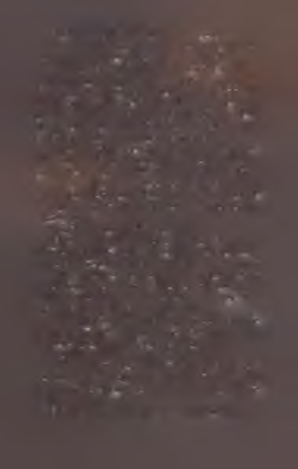
Vi öyküde elden geçirilmesi gereken bazı şeyleri, bazı pürüzleri, bazı mantıksal uygunsuzlukları belirtti. Hoşuna giden kısımları da belirtti ve öyküden bir bütün olarak bahsetti.
Bu arada gecenin o noktasında hafiften çakırkeyif olduğumu belirtmeliyim. Bu benim için az rastlanan bir durumdur.
Fakat bir barda takıldığımıza göre içki ısmarlamamak kabalık
olurdu. Sonra Vi bir tane daha içtiği için benim de içmem
gerekti çünkü dostça davranmak istiyordum. Sonra Vi’yle ilk
kez görüşmenin yarattığı tedirginlikle bir tane daha içtim.
Sonra öykümün yarattığı tedirginlikle bir tane daha.
Dürüst olmak gerekirse öykü hakkında biraz değil epeyce tedirgindim. Yeni yazılmış öykümün bir enkaz olduğunu yüreğimde hissediyordum. Devasa, dumanı tüten bir enkaz.
“Bir öykünün yapması gereken şeyleri yapmıyor,” dedim
ona. “Bir öyküde konuşma, aksiyon, çatışma olur. Bir öyküde
birden fa z la karakter bulunmalıdır. Ben otuz bin kelimelik bir
vinyet yazdım!”
Vi öykümün hoşuna gittiğini söyledi.
“Eh, evet,” dedim. “Benim de hoşuma gidiyor. Ama bunun
bir önemi yok. Bak, insanlar bir öyküden belli başlı şeyler
beklerler,” diye açıkladım. “Adımını dikkatli atarsan bunlardan bir veya ikisini es geçebilirsin ama hepsini başından sava-mazsm. Öykümde bir aksiyon sahnesine en yakın şey birinin
sabun üretmesi. Birinin sabun üretmesini tarif etmeye sekiz
sayfa harcadım. Bunu ancak bir deli yapar.”
Dediğim gibi öykü hakkında derin endişelerim vardı. Ve
belki hafif değil epey çakırkeyiftim. Ve nihayet daha önce hiç
kimseyle paylaşmadığım bir şeyi dile getiriyordum.
“İnsanlar bunu okuduklarında kızacaklar,” dedim.
Vi bana ciddi gözlerle baktı. “Bu öyküdeki cansız nesnelere karşı hissettiğim duygusal bağ, genellikle diğer kitaplardaki tüm karakterlere karşı hissettiğimden daha güçlüydü,” diye
açıkladı. “Bu iyi bir öykü.”
Fakat benim ikna olmaya niyetim yoktu. Başımı iki yana
174
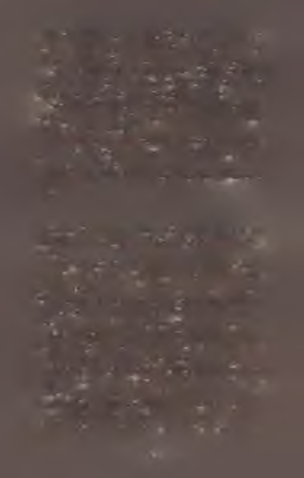
sallarken ona bakmıyordum bile. “Okuyucular belli başlı şeyler beklerler. İnsanlar bunu okuduklarında hüsrana uğrayacaklar. Normal bir öykünün yapması gerekeni yapmıyor.”
Sonra Vi daima hatırlayacağım bir şey söyledi. “Siktir et o
insanları,” dedi. “O insanlara göre öyküler sürekli yazılır. Peki
ya ben? Benim gibi insanlara göre öyküler nerede?”
Sesi tutkulu, sert ve biraz öfkeliydi. Bu noktada elini masaya vurmuş olabilir. Elini masaya vurduğuna inanmak istiyorum. Gelin vurdu diyelim.
“Bırak o diğer insanlar kendi normal öykülerini okusunlar,” dedi Vi. “Bu öykü onlara göre değil. Bu benim öyküm. Bu öykü benim gibiler için.”
Bu o zamana dek birinin bana söylediği en güzel şeylerden
biriydi.
Bu öyküyü yazmak gibi bir niyetim yoktu. Daha doğrusu Auri
hakkmdaki bu öyküyü, Auri hakkında yazmak gibi bir niyetim yoktu.
Onu yazmaya 2012’nin ortalarında başladım. Niyetim
onun George Martin ve Gardner Dozois tarafından düzenlenen Rogues antolojisinde bir kısa hikâye olarak yer almasıydı.
Onun oyunbaz bir öykü olacağını ve Auri nin o kitapta hiç
şüphesiz yer alacak daha geleneksel kötü adam türü karakterlere iyi bir tamamlayıcı rolü oynayacağını tahmin ediyordum.
Fakat ortaya beklediğim gibi bir öykü çıkmadı. Basit bir
oyunbazlık öyküsünden daha garipti ve de Auri tahmin etti
ğimden daha çok sırla ve gizemle doluydu.
Zamanla Auri öyküsü 14.000 kelimeye ulaşınca, öyküden
vazgeçtim. Çok uzundu. Çok tuhaftı. Hepsinden de öte antolojiye uygun olmadığı açıklık kazanmıştı. Auri oyunbaz bir karakter değildi. Daha da önemlisi bu bir kısa hikâye değildi.
Teslim tarihini çoktan geçirmiş olmama rağmen Martin ile
Gardner çok nazik davrandılar ve bana ilave süre tanıdılar. Bu
175
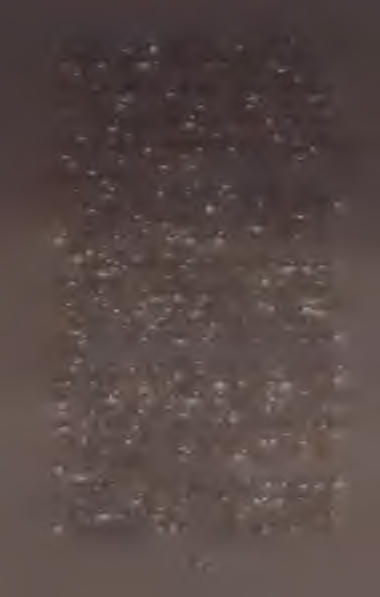
yüzden onun yerine Bast’ı içeren “The Lightning Tree” adlı
öykümü yazdım. İşte o, antolojiye çok daha uygundu.
Fakat Auri’nin öyküsü hâlâ kafamda dört dönüyordu ve
ondan kurtulmanın tek yolunun onu bitirmek olduğunu anladım. Zaten Subterranean Press’ten Bili Schafer’a çok öncesinden bir kısa roman borçluydum. Bili pek de çocuklara göre olmayan iki resimli kitabımı, The Adventures o f the Princess
and Mr. Whiffle: The Beneath the Bed ile onun devamı The Dark
o f Deep Beiow’u basmıştı. O yüzden biraz tuhaf bir öyküden
korktuğu yoktu.
Ben de yazmaya devam ettim ve öyküm uzadıkça daha da
tuhaflaştı. Bu noktada normalle uzaktan yakından bir ilgisi kalmadığını görebiliyordum. Doğru düzgün bir öykünün yapması gereken hiçbir şeyi yapmıyordu. Geleneksel tüm öl
çütlere kıyasla darmadağınıktı.
Fakat şöyle bir durum söz konusuydu. Ben öyküyü sevmiştim. Garipti, hatalıydı, karmakarışıktı ve güya bir öykünün ihtiyacı olan çoğu şeyden yoksundu. Ama tüm bunlara rağmen görevim yerine getiriyordu. Yalnızca Auri ve Şeyaltı
hakkında pek çok şey öğrenmekle kalmıyordum, aynı zamanda öykü kendince bir hoşluğa sahip olduğunu da görüyordum.
Sebep her ne olursa olsun öykünün kendi arzularına göre
gelişmesine izin verdim. Farklı bir şekle girmesi için onu zorlamadım veya sırf öyle gerekiyor diye içine bir şey sokmadım.
Onu kendi haline bırakmaya karar verdim. En azından o an
için. En azından sonuna varana dek. Vardığımda muhtemelen
elime editör neşterini alıp onu normal bir şeye dönüştürmek
için acımasızca bir ameliyat düzenleyeceğimi biliyordum.
Ama henüz değil.
Görüyorsunuz ya, bu yoldan daha önce de geçmiştim.
Rüzgânn Adı da yapması gereken pek çok şeyi yapmıyor. Kitabın giriş kısmı bir yazar olarak asla yapmamanız gereken şeylerin adeta bir listesi. Ama buna rağmen iş görüyor. Bazen
176
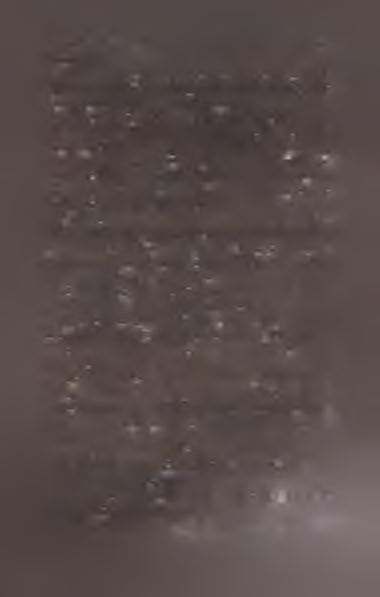
bir öykü iş görür, çünkü farklıdır. Belki bu da o tür bir öyküydü. ..
Fakat Auri’nin sabun yaptığı sekiz sayfalık sahneyi yazdı
ğımda durumun öyle olmadığını fark ettim. Ben bir sandık
öyküsü yazıyordum. Bu tabiri bilmeyenleriniz için açıklayayım; bir sandık öyküsünü yazarsınız, bittiğinde de müsveddeyi bir sandığa kaldırıp aklınızdan çıkarırsınız. Onlar bir yayıncıya satabileceğiniz, insanların okumak isteyecekleri
türden öyküler değildir. Onları yazarsınız, sonra ölüm dö
şeğinizde hatırlar ve yakın bir dostunuzdan basılmamış tüm
kâğıtlarınızı yakmasını istersiniz. Tabii internet tarayıcısındaki geçmiş bilgilerinizi sildikten sonra.
Sub Press’ten Bill’in tuhaf projelere açık olduğunu biliyordum ama buna? Hayır. Hayır, bu sırf aklımdan çıkarmak için yazmam gereken bir öyküydü. Auri’yi ve dünyayı daha iyi tanımak için onu yazmalıydım. (Bu arada dünyaya Temerant adını verdim, bilmem çaktınız mı?)
Özetle bu öykünün kendim için olduğunu biliyordum.
Başkaları için değildi. Bazen olur böyle şeyler.
Yine de onu seviyordum. Garip ve hoştu. Nihayet Auri’nin
sesini bulmuştum. Onu fazlasıyla severim. Üstelik üçüncü
şahısla yazmak hakkında bir sürü şey öğrendim. O yüzden
tümüyle bir zaman kaybı değildi.
Öykü bittiğinde onu menajerim Matt’e yolladım, çünkü
bir yazar olduğunuzda öyle yapmanız gerekir. Ona öyküyü
Bill’e teklif edeceğimi, fakat Bill’in onu isteyeceğini düşünmediğimi, çünkü deyim yerindeyse bir enkaz olduğunu söyledim.
Fakat Matt öyküyü okuduğunda ondan hoşlandı.
Beni aradı ve onu Betsy’ye, yani DAW’daki editörüme gön
dermemiz gerektiğini söyledi.
“Bunu isteyecek hali yok,” dedim. “Bu bir enkaz Bu .iik ,ık
bir delinin yazabileceği bir öykü.”
Matt kontratlarıma göre yazdığım (ııııı kıi.ıpl.ııd.ı tll n ı
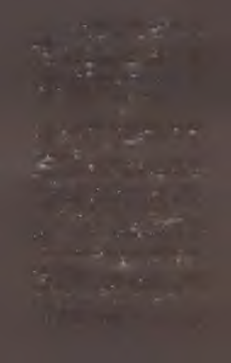
hakkının Betsy’de olduğunu hatırlattı. “Zaten,” dedi, “nezaket icabı onu da meseleye dahil etmeliyiz. O senin başlıca yayıncın.”
Omuz silktim ve Matt’e çok istiyorsa öyküyü göndermesini söyledim. Betsy’nin onu okuyacağını düşününce biraz utanmadım desem yalan olur.
Fakat okuduğu zaman Betsy de öykümden hoşlandı. Flem
de çok. Onu basmak istedi.
İşte o zaman ecel terleri dökmeye başladım.
s*®
Vi Hart’la yaptığım sohbetten sonraki aylar içinde bu öyküyü kabaca seksen defa revize ettim. (Bu benim için sıradışı bir durum değil. Hatta bu seferkinin biraz hafif kaldığını bile
söyleyebilirim.)
Sürecin bir parçası olarak bu öyküyü üç düzine beta okuyucuya verip bitmek bilmez, saplantılı revizyonlarımda yardımı olsun diye geribildirim topladım. Ve insanlann pek çok farklı şekilde tekrar tekrar dile getirdikleri yorum şuydu:
“Başkalarının ne düşüneceğini bilemem. Muhtemelen
hoşlanmayacaklar. Ama benim çok hoşuma gitti.”
Bu kadar çok insanın ağzından bunun bir varyasyonlarını
duymak bana garip geldi. Yahu bu yazarın önsözünde bir iki
sayfa önce benzer bir şeyi benim de söylediğimi daha yeni
fark ediyorum.
İşin aslı şu ki Auri’ye düşkünüm. Bu garip, tatlı, çatlak kızın kalbimde özel bir yeri var. Ona olan sevgim hiç de azım-sanacak gibi değil.
Sanırım bunun sebebi ikimizin de kendimizce çatlak olmamız. Daha da önemlisi ikimiz de bunun farkındayız. Auri kendi içinde doğru düzgün olmadığını biliyor ve bu da ona
kendini çok yalnız hissettiriyor.
Onun nasıl hissettiğini iyi biliyorum.
Fakat bu başlı başına sıradışı bir durum değil. Ne de olsa
178
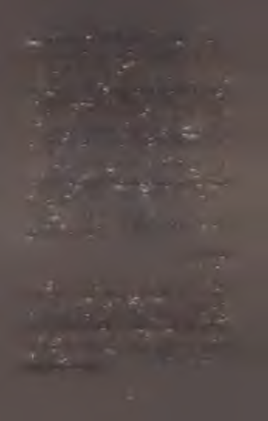
ben bir yazarım. Karakterin nasıl hissettiğini bilmek benim
işim. Fakat ancak geribildirim toplamaya başladıktan sonra
bunun ne kadar yaygın bir duygu olduğunu anladım. Birbiri
ardına pek çok kişi bana Auri’ye empati duyduğunu, onun
neler hissettiğini anladığını söyledi.
İşte bunu beklemiyordum. Kaçımızın günbegün biraz çatlak ve yalnız hissederek, tıpatıp aynı hislere sahip başkalarıyla çevrili olarak yaşayıp gittiğini merak etmemek elimde değil.
Kısacası, eğer bu kitabı okuduysanız ve hoşunuza gitme-
diyse üzgünüm. Hepsi benim suçum. Bu garip bir öykü. İkinci kez okursanız belki daha çok hoşlanırsınız. (Öykülerimin çoğu ikinci okuyuşta daha güzeldir.) Ama belki de hoşlanmazsınız.
Bu öyküyü huzur kaçırıcı, itici veya kafa karıştırıcı bulan
o insanlardan biriyseniz özür dilerim. Doğrusu bu öykü muhtemelen size uygun değil. İyi haberse dünyada tam size göre yazılmış başka pek çok öykü var. Çok daha fazla hoşlanaca
ğınız öyküler.
Bu öykü hafiften çatlak olan herkes için.
Ben de sizden biriyim. Yalnız değilsiniz. Hepiniz de benim
gözümde çok güzelsiniz.
Pat Rothfuss
Haziran 2014
Not: Çizimlerden hiç bahsetmediğimi daha yeni fark ediyorum ve bu çok büyük bir ayıp. Üstelik yalnızca güzel oldukları için değil. Yalnızca Nathan Taylor benim saplantılı delili
ğime katlanacak kadar sabırlı olduğu için de değil. Bu öyküye
nasıl dahil oldukları başlı başına ilginç bir öykü olduğu için ...
Maalesef daha fazla vaktim ve boş yerim kalmadı. Bu yüzden o öykü, bloğumda yer alana kadar beklemek zorunda.
Eğer ilgiliyseniz, onu bu adreste aratabilirsiniz: http://www.
patrickrothfuss.com
179
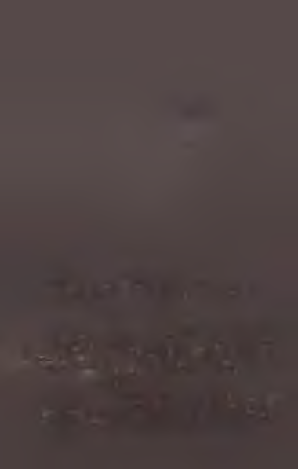
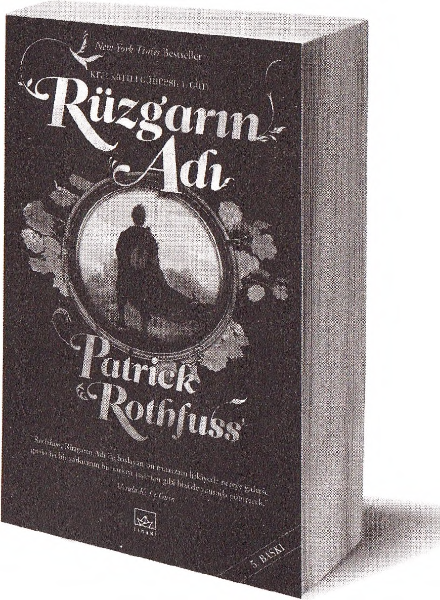
32 DİLE ÇEVRİLEREK DÜNYADA FIRTINALAR KOPARAN
KRALKATİLİ GÜNCESİ NİHAYET TÜRKÇEDE!
BENİM ADIM KVOTHE
U yuyan höyü k kralların d an p ren sesler kaçırdım . Trehon kasab asın ı y a k ıp kül ettim .
F elu rian ’la bir g ec e g eçirdim ve hem can ım a hem d e a klım a m u k ay y et olabildim . Çoğu insanın kab u l edildiğinden d a h a k ü çü k bir y a şta Ü niversite’den atıldım . B aşkaların ın gün düz g özü yle a ğ ız la rın a a lm a kta n bile korktu kları y ollardan ay ışığı a ltın d a geçtim .
T an rılarla konuştum , kad ın la r sevdim ve ozan ları a ğlatan şa rk ıla r y azdım .
B elki ben i duym uşsunuzdur.
Fantastik kurgu edebiyatının eşsiz bir masalı, bir kahramanın kendi ağzıyla anlattığı
öyküsü işte böyle başlıyor. Bir keder öyküsü bu... bir kurtuluş öyküsü... bir adamın
evrenin anlam ını arayışının ve gerek o arayışın gerekse de onu sürdürmesini sağlayan gem vurulamaz iradenin bir efsaneye dönüşmesinin öyküsü...
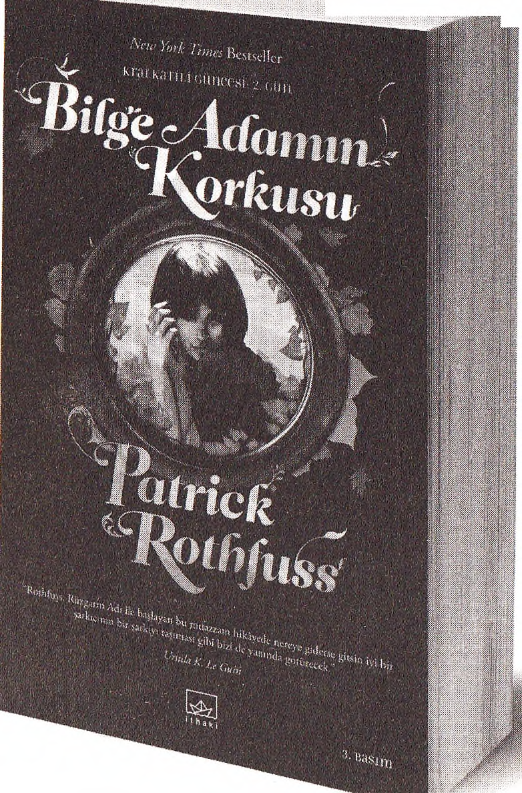
BİLGE A DAM IN KO RKUSU YAYIMLANDIĞI İLK HAFTA AMERİKA’DA
ÇOKSATANLAR LİSTESİNE BİR NUM ARADAN GİRDİ.
“H er bilge ad am ın korktu ğ u üç şey vardır: fır t ın a lı bir den iz, a y sız b ir g e c e ve y u m u şa k başlı birinin ö fk e s i.”
Uyuyan höyük krallarından prensesler kaçırdım . T rebon kasabasını yakıp
kül ettim . Felurian’la bir gece geçirdim ve hem canım a hem de aklım a
m ukayyet olabildim . Çoğu in sanın alındığından daha küçük bir yaşta
Ü niversite’den atıldım . B aşkalarının gündüz gözüyle ağızlarına alm aktan
bile korktukları yollardan ay ışığı altında geçtim . Tanrılarla kon uştum ,
kadınlar sevdim ve ozanları ağlatan şarkılar yazdım .
Benim adım Iivothe. Belki beni duym uşsunuzdur.
Bilge A dam ın K orkusu’nda Kvothe kahramanlık yolundaki ilk adımlarını
atıyor ve kendi ömrü dahilinde efsane haline gelmenin hayatı bir adam için ne
kadar zor kılabileceğini öğreniyor.
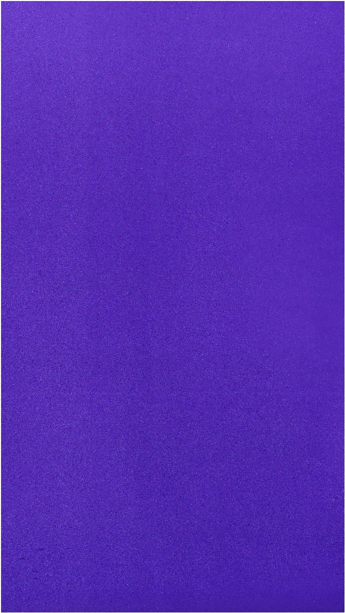
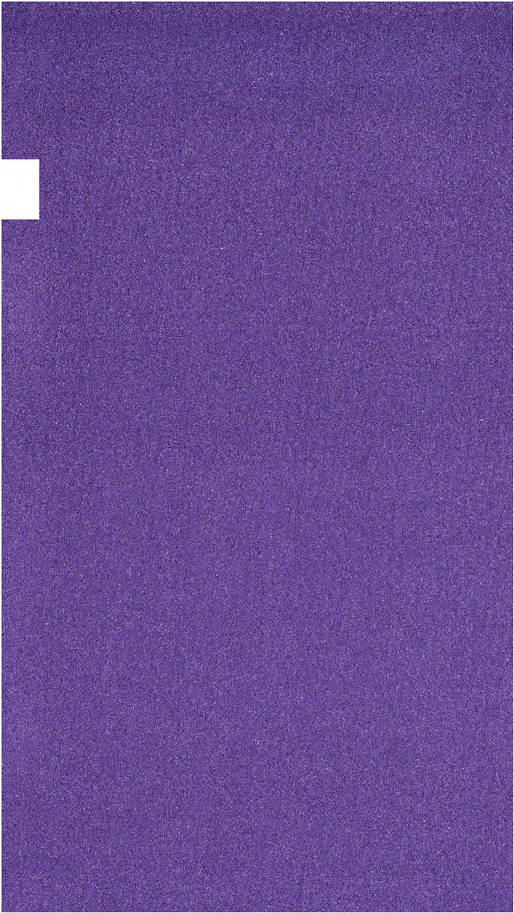